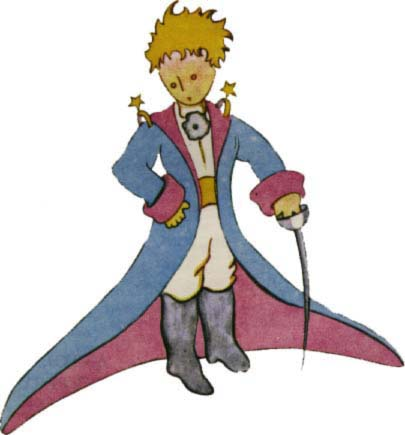

LÉONU WERTHOVIOdpus»te, dìti, ¾e jsem vìnoval tuto knihu dospìlému! Mám záva¾nou omluvu: Ten dospìlý je mùj nejlep¹í pøítel. Mám je¹tì jednu omluvu: ten dospìlý dovede v¹echno pochopit, dokonce i knihy pro dìti. A mám je¹tì tøetí omluvu: ten dospìlý bydlí ve Francii, trpí tam hladem a zimou. Velice potøebuje, aby ho nìkdo potì¹il. Nestaèí-li v¹echny tyhle omluvy, rád vìnuji tuto knihu dítìti, kterým kdysi ten dospìlý byl. V¹ichni dospìlí byli nejdøíve dìtmi. (Ale málokdo se na to pamatuje.) Opravuji tedy své vìnování:
LÉONU WERTHOVI,
KDY® BYL MALÝM CHLAPCEM